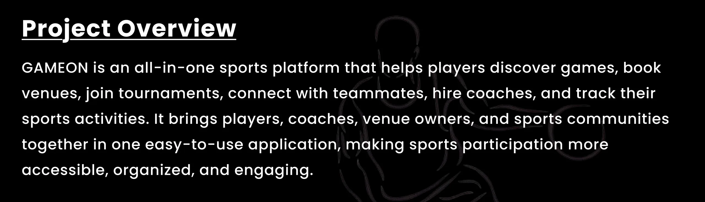
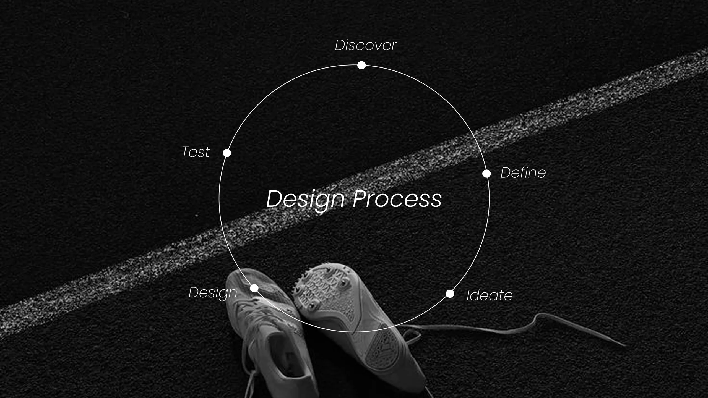
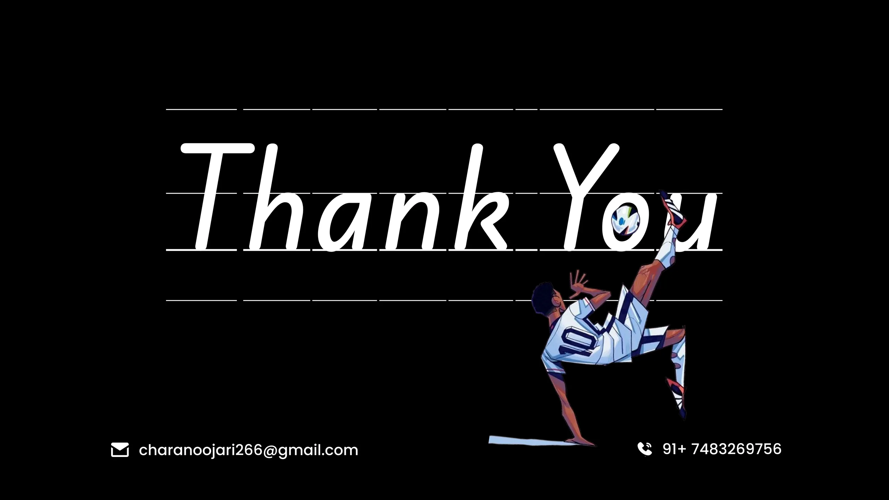

Play together
Browse sports, find nearby matches, and see the level, time, venue, and open slots before booking.
Product design · Case study 01
Make it easier to find your people, your court, and your next game.
01 / The opportunity
GAMEON brings the everyday sports journey into one place: discover a nearby game, book a venue, meet players, and find the gear to keep going.

Browse sports, find nearby matches, and see the level, time, venue, and open slots before booking.
Move from a game listing to a clear booking summary, payment choice, and confirmation.
Meet local clubs, join group activities, and keep the momentum going beyond one match.
02 / A five-stage design process
The project moved through discovery, definition, ideation, design, and testing—using research to shape the product and its key journeys.

03 / The process
User interviews and surveys surfaced the friction around finding players and booking venues. Personas, journey mapping, card sorting, and flow mapping helped turn those findings into a clear product structure.
Understand sports players, coaches, venue owners, and their needs.
Use research insights to shape a persona, journey, and opportunity.
Explore flows, organize information, and sketch possible solutions.
Build wireframes and screens, then use feedback to improve them.
04 / The case study
Browse the presentation from the original project cover through research, product definition, and screen explorations. Select any frame to expand it.
“A good sports app gets people from looking for a game to playing one.”
GAMEON connects the steps that often live in separate places: discovering a match, coordinating a venue, paying for a spot, and finding people to play with.
The design direction keeps the experience approachable at a glance, with direct calls to action and clear context at each decision point.
A connected sports experience
